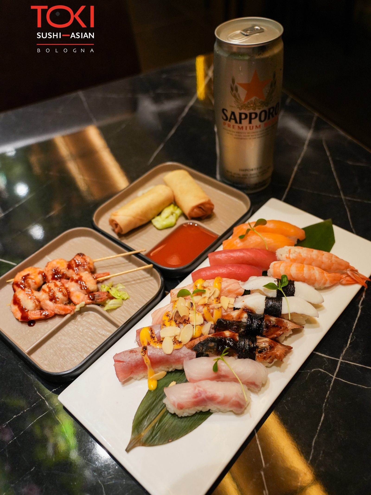

Home · Menu AYCE
Ordina liberamente dal menu, portata dopo portata. Cucina espressa, qualità senza compromessi.
Scegli la formula, ordini quello che desideri dal menu AYCE e la cucina prepara tutto al momento. Un prezzo fisso a persona, senza sorprese.
Pranzo o cena, con prezzo fisso a persona valido per l'intero tavolo.
Componi liberamente i tuoi giri di ordinazione tra sushi, piatti caldi e dolci.
Ogni portata arriva preparata al momento, per assaporare tutto alla giusta temperatura.
Sushi, piatti caldi e specialità del giorno, con la stessa cura della sera.
Il menu completo: dai nigiri alle specialità scottate, fino ai dessert.
Prezzi indicativi e facilmente aggiornabili. La formula è valida per l'intero tavolo. Per ridurre lo spreco alimentare, il cibo ordinato e non consumato può prevedere un piccolo supplemento.
Una selezione delle categorie incluse. Il menu completo è disponibile in sala e viene aggiornato periodicamente.
Poche regole semplici per goderti al meglio l'esperienza Toki.
· La formula All You Can Eat è valida per tutte le persone al tavolo.
· Bevande, coperto e alcuni dolci possono essere soggetti a supplemento e non sempre inclusi nel prezzo.
· Alcune specialità premium possono prevedere un piccolo extra, sempre indicato nel menu.
· Per rispetto del cibo, il non consumato può comportare un supplemento.
· Informa sempre il personale in caso di allergie o intolleranze: alcuni prodotti possono essere surgelati all'origine.